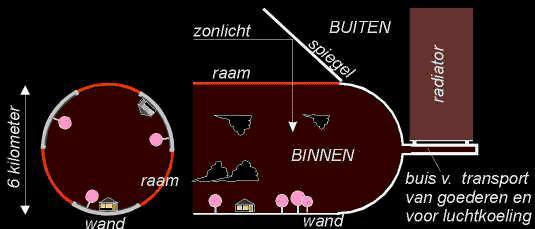

Space Colonization
Space Colonization
Habitat: Life in a Bottle
There are several proposed models for space colonies, including the Torus Model, which is shaped like a huge doughnut, and The Cylindrical Model.
As a first step toward interstellar travel, a space civilization/community will live inside these enormous, pressurized bottle-like enclosures (30 km in length, and 3 km radius) which will orbit the sun. The habitats will be self-sufficient, constructed using materials gathered in space (i.e. asteroids and planetoids), and water, collected in the form of ice from the moons of Mars, can be used to design rivers and ponds. Clouds will naturally form above the land areas, given the correct humidity and temperature which will actually be able to be adjusted and even pre-programmed!
Normally, here on Earth, we have the atmosphere to filter out the harmful radiation emitted by the sun. To protect space inhabitants from this radiation, soil could cover the entire area inside the bottle, and solar energy can be used to create artificial light inside that is safe. Circadian and seasonal rhythms can be simulated for all the living creatures. Another possibility is to use very thick quartz glass as a filter for the light that is reflected, by mirrors, into the bottlekeeping the natural, full-spectrum sunlight that we are so accustomed to. For the purist who would want to have seasons, remaining in orbit would be a definite plus, as these cycles would be most likely to be accurately simulated.

Cross-section of the space habitat (schematic dimensions used)
To simulate the gravitational pull of planet Earth along its inner surface, the enclosure will turn constantly. This will create centripetal force (the same force that is exerted on water in a pail when you swing it around rapidly), which is measured in gs. One g equals the pull found on Earth. The larger the bottle, the faster it will turn to produce a force of one g. Also, as colonists approach the axis of the enclosure the pull decreases, creating the floating effect that has been witnessed in videos of astronauts in space.
Besides the entertaining possibility of near-zero gravity, day-to-day life in such a space colony can very much resemble life on Earth. In fact, given the fact that everything in the environment will be made from scratch, people living in such a habitat will probably be closer to nature than many suburban communities of our own planet. Imagine a future in which advanced technology gives humans the option to live more simply How about a tropical island paradise? Or, spectacular daily sunrises and sunsets?
If the habitat ventures forth beyond our solar system, another energy source would be used, such as nuclear energy. The voyagers of such a space craft would be personally demonstrating their confidence in the safety of living next to a nuclear reactor!
Is this really possible?
Well, why not? The Earth, itself, is a network of ecosystems enclosed in an atmospheric sac, if you will. Furthermore, every mineral, water, and carbon-based molecule, regardless of complexity or simplicity, has been used, reused, broken down and recycled since before the emergence of our planet as we know it. So, why not create a self-sufficient, enclosed environment? An inside-out earth?
A social benefit would be that subcultures would have the freedom to create the world they prefer to live in. Not only can inhabitants choose to live close to nature, near clean and pure air and water; but smokers, for example, can live in a smokers colony where they can pollute their own air.
In fact, a space colony could provide infinite room for all of societys ills, from crime to industrial pollution. These space ships could be designed for use as escape-proof incarceration systems and industries that usually produce hazardous wastes on Earth. This would free up and clean up a great amount of space on the planet for law-abiding citizenry.
Some have proposed that space be used as the final frontier for garbage that is not biodegradable on Earth. According to this idea, pollutants can be released into space where they will be pushed trillions of miles away by solar winda force exerted by blasts from the sun (which we are normally shielded from by our atmosphere). For many, space colonization sounds like the ultimate answer.
However, many might fear that this sort of system could be abused or used unethically, particularly with regard to any of societys undesirables. They may, very likely, wind up on the same ship as the pollutants and industrial waste!
Environmentalists may argue that creating pollutants only to release them into space is irresponsible and selfish, regardless of how far away they may be pushed.
Others may argue that it would simply not be a viable model to sustain life in the long-term. An ecologist might claim that nature, in her infinite wisdom, creates weather and atmospheric pressure according to the needs of an entire ecosystem. As the space habitat attempts to achieve its equilibrium, we might interfereto its detrimentwith our whimsical programming. Furthermore, the ecologist might argue that while an enclosed habitat may succeed in simulating the essential components of life-on-earth, it would likely overlook the various intricate relationships between all elements that sustain life, including parasitic and symbiotic micro-organisms.
A biologist might argue that an asteroid floating in space was not exposed to, nor influenced by, the same factors as planet Earth was in its evolution; therefore, it cannot be merely acquired and pulverized into living soil that would effectively sustain living organisms that did indeed evolve on this planet.
Furthermore, an agriculturist may point out the fact that in order to produce living crops, soil must contain macro and microminerals that exist in a specific, balanced, ratioa ratio that is virtually identical to that of the optimally healthy human body,
A nutritionist might warn that if the space colonys soil and blood samples do not produce optimal macro-to-micromineral ratios, the colonies may see unprecedented epidemics of diseases such as cancer and heart disease
To which the biospherist might mention the Biosphere 2 project, a study in which all the participants emerged from an enclosed habitat after two years in a healthier state than when they entered.
However, one might counter that the enclosure leaked at a rate of 10% per year, and that while this is a successful rate, by Earths standards, in the vacuum of space such a leak could be disastrous, as solar wind would likely push all the air trillions of miles into the outer edges of the universe. Hey, at least the colonists would be healthier than when they entered.
The pessimist or the cynic (that wasnt pessimistic or cynical enough for you?) might doubt that humans can live in any man-made environmentregardless of how spacious it may be without seeking to hurt exploit or oppress someone.
Finally, the futurist carefully examines all the evidence, smiles knowingly, and assures us: Dont worry! By then, well see the convergence of nanotechnology, artificial intelligence, genetic engineering, and quantum physics. The transhuman economists, scientists and politicians will surely figure it all out. Youll see"
^ Top ^